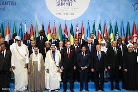

The Organisation of Islamic Cooperation (OIC) is the second largest inter-governmental organisation after the United Nations, with the membership of 57 states, covering four continents. The OIC is the collective voice of the Muslim world to ensure and safeguard their interest on economic socio and political areas. The OIC has Institutions, which implement its programmes.
The Islamic Summit includes Kings, Heads of State and the Governments of Member States, and is the OIC's supreme authority. It convenes once every three years to deliberate, take policy decisions, provide guidance on issues pertaining to the realization of objectives and consider other issues of concern to Member States and the Ummah.
The Council of Foreign Ministers meets once a year and considers the means for the implementation of the OIC's general policy by adopting decisions and resolutions on matters of common interest in the implementation of the OIC's objectives and general policy, and reviewing progress in the implementation of decisions and resolutions adopted at previous Islamic Summits and Councils of Foreign Ministers. The CFM considers and approves the programme
The General Secretariat is the OIC's executive organ and is entrusted with implementing the decisions of the OIC decision- making bodies. It is led by the Secretary General. The General Secretariat is composed of several departments that enhance the day-to-day operations of the OIC including: a) Palestine and Al-Quds Affairs; b) Department of Political Affairs and Muslim Minorities; c) Department of Economic Affairs; d) Department of Science and Technology (including Environment, Health and Higher Education; e) International Cooperation and Humanitarian Affairs Department (ICHAD); f) Department of Administration and Finance; g) Directorate of Culture and Social and Family Affairs Department; h) Department of Legal Affairs; i) Department of Public Information and Communications; j)Department of Information Technology; k) Department of Conference; l) Department of Protocol and Public Relations
According to its charter, the OIC aims to preserve Islamic values, safeguard and defend the national sovereignty and independence of member states and to contribute to international peace and security. While the organisation has been known for its cultural and social projects,guidance on issues objectives and consider other issues of concern to Member States and the Ummah.
Learn MoreThe Statistical, Economic and Social Research and Training Centre for Islamic Countries (SESRIC), was founded as a subsidiary organ of the Organisation of Islamic Cooperation (OIC) in pursuance of Resolution No. 2/8-E adopted by the 8th Islamic Conference of Foreign Ministers (ICFM), held in Tripoli in May 1977. The Centre started its activities in Ankara on 1 June 1978..
Learn MoreThe Organisation of Islamic Cooperation (OIC) is the second largest inter-governmental organisation after the United Nations, with the membership of 57 states, covering four continents. The OIC is the collective voice of the Muslim world to ensure and safeguard their interest on economic socio and political areas. The OIC has Institutions, which implement its programmes.
Learn More